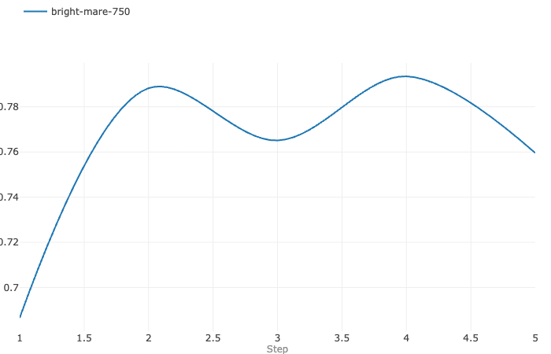

I received a quest by my little brother, creating a League of Legends (LoL) Highlight Extraction tool. It seemed simple enough and I was happy to be able to use my Deep Learning skills for something that could be used by a non-tech person! 🤓
Where do you even start in such a quest? Data!
- Have my little brother annotate at minimum 2 streaming sessions of TheBauss (á 6 hours)
- It’s some data, not enough or varied enough but it’s something.
- Create balanced dataset with good splits
- We cannot leak data between train and validation
- This is solved by chunking videos into 30s segments which are then split between train/validation.
- Balancing the data to have a little higher highlight distribution than reality, to generalize better.
- Reality is ~13% highlights, I rebalance the dataset to be ~30% highlights in training.
- We cannot leak data between train and validation
- Start training!
TheBaussffs
Simon “Thebausffs” Hofverberg (born October 3, 1999) is a Swedish player who last played for G2 Esports. He’s one of the biggest League of Legends streaming personas on Twitch right now (2023).
Known for:
- Highest ranked AD Sion player on EUW.
- “Inting mode” where he dies but wins in gold based on calculated trades and “good deaths”.
Model Architectures
I chose to go with two different architectures:
- Image Classification
- KISS: use ResNet (testing both pretrained & scratch)
- Potentially use some other architecture in the future
- Video Classification
- KISS: Use RNN on top of “Image Classifier” that has no head, i.e. Feature Extractor
- RNN are naturally good with sequences as they’ve an internal state
In the future I’d like to try a VisionTransformer (ViT), but for now I’ll keep my compute low and see where I can go! As Jeremy Howard says, start simple and scale when required - it’s better to have something than nothing.
Implementation
The implementation exists in a single Notebook (runnable in Google Colab with a free GPU) - keeping it simple to use as a non-programmer (my brother).
There’s a few steps:
- Download Twitch Stream (
twitch-dl) - Convert into frames in a set FPS (3,
ffmpeg) - Upload to Cloudflare R2 (persist)
- Build DataLoader
- Select and Train Model
- Load model and run inference
FFMPEG + CUDA (step 2)
The ffmpeg conversion from Video to Frame was incredibly slow on Colab, I found two issues:
- CPU is much poorer than M1 Macbooks (~30x)
- Mounting storage (GDrive) makes it not work at all (100x)
The second option is simple, have all data located on the Colabs storage and do conversion, then when done copy to mounted storage (GDrive) for persistance.
The first is a bit harder, but I found that I could accelerate conversion using CUDA! 🤓
The result? Beautiful!
There’s some delay through moving data from RAM to GPU but it gave magnitudes of speed-up - which is awesome!
And it’s not that hard, I was confused by multiple places to enable CUDA, but found the following to be the best:
ffmpeg -hwaccel cuda -i <FILE> -preset faster -vf fps=3 -q:v 25 img%d.jpgThis command will use hwaccel as CUDA, which means that it accelerate certain workloads by moving data to the GPU (expensive) then computing it on the GPU (fast). It’ll run with fps=3 in this setup. I found it on average sped up my frame-creation by 14-30x.
Small to Medium Dataset Speedups
In my professional worklife I’ve found that smaller datasets (<= RAM) has huge performance gains by keeping tensors in-memory, it’s much larger than I ever anticipated.
For this dataset I could only keep labels in-memory, but doing that makes sense as well. 😉
Analysis
Analyzing my results was done by a few different things:
- Metrics (😅)
- LIME
- Viewing data that model predicts as non-highlight but is highlight
- *Timeline chart
- This was the best way to review a “unknown” clip, do the highlight intensities overlap real highlights? Boy they do!
- It’s also how it’ll be used by my brother.
Result
The results are better than expected! I hit ~80% accuracy which is pretty good based on image-to-image classification, if we did an average of the last few frames I’d bet it’d be better. All in all having non-perfect score in such a subjective task as Highlight Extraction is a strength. We don’t want to overfit the data but rather be able to find highlights in new clips.

And to build my highlights I did a rolling_sum on the last 30 seconds of predictions, giving a highlight intensity chart as shown in Figure 1.
After manual validation of the Intensity Chart it looked really good! It had lower score on some “easier 1v1 kills”, but all the cool fights and ults was caught by the model! I’m a bit impressed about how well a simple Image Classifier solve this task, applying Video Classification didn’t really change the results that much and introduced unwaranted complexity.
The result is that the model predics ~8% of all frames as highlights, which is pretty darn good number as the “real” one is ~13%!
Appendix: Code
Data Tools
def chunk_splitter(total_size: int, chunk_size: int, split: int | float) -> np.array:
_, val_idxs = train_test_split(np.arange(total_size // chunk_size), test_size=split, random_state=42) # ignoring final unsized chunk
is_valid = np.zeros(total_size, dtype="int")
for index in val_idxs:
index *= chunk_size
is_valid[index:index+chunk_size] = 1
return is_validclass FrameDataset(Dataset):
def __init__(self,
df: pl.DataFrame,
augments: Compose,
frames_per_clip: int,
stride: int | None = None,
is_train: bool = True,
):
super().__init__()
self.paths = df["path"].to_list()
self.is_train = is_train
if is_train:
self.y = torch.tensor(df["label"])
self.frames_per_clip = frames_per_clip
self.augments = augments
self.stride = stride or frames_per_clip
def __len__(self):
return len(self.paths) // self.stride
def __getitem__(self, idx):
start = idx * self.stride
stop = start + self.frames_per_clip
if stop-start<=1:
path = self.paths[start]
frames_tr = self._open_augment_img(path)
if self.is_train:
y = self.y[start]
else:
frames = [self._open_augment_img(path) for path in self.paths[start:stop]]
frames_tr = torch.stack(frames)
if self.is_train:
y = self.y[start:stop].max()
if self.is_train:
return frames_tr, y
else:
return frames_tr
def _open_augment_img(self, path):
img = default_loader(path)
img = self.augments(img)
return imgclass FrameDataModule(L.LightningDataModule):
def __init__(self,
dataset: Dataset,
batch_size: int = 32,
chunk_size_for_splitting: int = 3 * 30,
num_workers: int = 2,
pin_memory: bool = False
):
super().__init__()
self.dataset = dataset
self.batch_size = batch_size
self.num_workers = num_workers
self.pin_memory = pin_memory
self.chunk_size_for_splitting = chunk_size_for_splitting
split = chunk_splitter(len(ds), chunk_size=self.chunk_size_for_splitting, split=.15)
val_indices = np.where(split)[0]
train_indices = np.where(split == 0)[0]
self.ds_train = Subset(self.dataset, train_indices)
self.ds_val = Subset(self.dataset, val_indices)
def train_dataloader(self):
return DataLoader(self.ds_train, shuffle=True, batch_size=self.batch_size, num_workers=self.num_workers, pin_memory=self.pin_memory)
def val_dataloader(self):
return DataLoader(self.ds_val, batch_size=self.batch_size, num_workers=self.num_workers, pin_memory=self.pin_memory)Classifiers
class ResNetClassifier(nn.Module):
def __init__(self, model: ResNet, num_classes: int = 2):
super().__init__()
self.num_classes = num_classes
self.model = model
self.model.fc = nn.Linear(self.model.fc.in_features, num_classes)
def forward(self, x):
return self.model(x)class RNNClassifier(nn.Module):
def __init__(self, model: ResNet, num_classes: int = 2):
super().__init__()
self.num_classes = num_classes
self.feature_extractor = model # repeat thrice
self.feature_extractor.fc = nn.Linear(512, 512) # New fc layer
self.rnn = nn.LSTM(
input_size=512,
hidden_size=256,
num_layers=1,
batch_first=True
)
self.classifier = nn.Linear(256, num_classes)
def forward(self, x):
features = []
for i in range(x.shape[1]):
frame_feat = self.feature_extractor(x[:, i])
features.append(frame_feat)
x = torch.reshape(torch.stack(features), [x.shape[0], x.shape[1], -1])
out, _ = self.rnn(x)
out = out[:, -1, :]
out = self.classifier(out)
return outfrom typing import Any
import torch
import torch.nn as nn
import torch.nn.functional as F
import lightning as L
import torchmetrics
class LightningWrapper(L.LightningModule):
def __init__(self, model: nn.Module, learning_rate=1e-3):
super().__init__()
self.model = model
self.lr = learning_rate
metrics = torchmetrics.MetricCollection({
"accuracy": torchmetrics.Accuracy(task="multiclass", num_classes=self.model.num_classes)
})
self.train_metrics = metrics.clone(prefix="train_")
self.val_metrics = metrics.clone(prefix="val_")
def forward(self, x):
return self.model(x)
def training_step(self, batch, batch_idx):
x, y = batch
logits = self(x)
loss = F.cross_entropy(logits, y)
self.log('train_loss', loss)
self.train_metrics(logits, y)
self.log_dict(self.train_metrics, prog_bar=True)
return loss
def validation_step(self, batch, batch_idx):
x, y = batch
logits = self(x)
loss = F.cross_entropy(logits, y)
self.log('val_loss', loss)
self.val_metrics(logits, y)
self.log_dict(self.val_metrics, prog_bar=True)
def configure_optimizers(self):
optimizer = torch.optim.Adam(self.parameters(), lr=self.lr)
return optimizerTraining Loop
mlf_logger = MLFlowLogger(log_model=True)
mlflow.pytorch.autolog()
BATCH_SIZE = 128
# Define the duration of each chunk in seconds
chunk_duration_s = 30
chunk_duration_frames = 3 * chunk_duration_s
transform = transforms.Compose([
transforms.Resize((224, 224)),
transforms.ToTensor()
])
ds = FrameDataset(labeled_df_rebalanced, transform, 1) # set 1 to higher if image classifier, is num_frames
data = FrameDataModule(ds, BATCH_SIZE, chunk_duration_frames, pin_memory=True)
model = ResNetClassifier(models.resnet50()) # image classifier
# model = RNNClassifier(models.resnet18()) # video classifier
model = LightningWrapper(model, learning_rate=1e-4)
trainer = L.Trainer(max_epochs=5, logger=mlf_logger, callbacks=[ModelCheckpoint(".")])
with mlflow.start_run():
trainer.fit(model, datamodule=data)